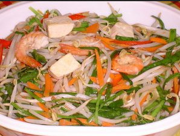

Memasak Tidak Sama Dengan Memogram
Dulu, pas waktu kuliah dasar-dasar pemrograman, ada dosen yang menganalogikan cara membuat program dengan memasak.
Ternyata jauh beda.
Setelah melihat beberapa cara memasak makanan di situs-situs internet bagi pemula, seharusnya beberapa para tukang masak itulah yang belajar pemrograman.
Tidak percaya? Berikut langkah-langkah memasak sayur toge,
- Daging dicuci bersih kemudian potong potong seperti dadu
- Tahu dicuci bersih lalu potong potong seperti dadu.
- Bersih itu relatif, tapi lanjut dulu.
- Masukkan daging sapi dan tahu yang telah dipotong potong ke dalam panci, panaskan hingga mendidih.
- Saya pemula. Mendidih disini maksudnya bagaimana? Memangnya daging sapi dan tahu bisa mendidih? Lanjut saja.
- Tomat, bawang merah, bawang putih, cabe rawit diiris tipis tipis. Selanjutnya masukkan wajan untuk ditumis sampai matang (keluar bau aromanya)
- "Masukkan wajan"? Ya, anggaplah salah tulis. Mungkin maksudnya masukkan tomat, bawang merah, bawang putih, dan cabe rawit yang telah diiris tipis ke dalam wajan dan ditumis sampai matang. Karena saya pemula, saya asumsikan matang itu sama dengan keluar bau aromanya.
- Tumiskan bumbu tersebut ke dalam kuah yang telah berisi daging dan tahu. Jangan lupa tambahkan garam dan bumbu penyedap.
- Bumbu? Maksudnya bawang dan teman-temannya? Kuah apa? Perasaan dari tadi tidak ada yang pakai kuah? Bumbu penyedap itu apa? Garam? Lada?
- Mungkin langkah-langkah memasak di atas bukan ditujukan bagi pemula. Ya, tidak apa-apalah dicoba. Paling juga gosong.
(Ujung-ujungnya masak mi rebus pakai telur.)